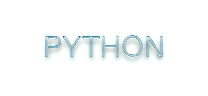

<!DOCTYPE html><html><head><meta charset="utf-8"><title>Python与人工智能间有什么关系？Python相关职位的薪资是多少？ | 技术学派</title><meta name="viewport" content="width=device-width,initial-scale=1,maximum-scale=1"><meta name="keywords" content="IT培训, Python, 大数据, 人工智能, Web前端, PHP, python"><meta name="description" content="我们经常听到”Python“与”人工智能“这两个词，也很容易混淆的两个词，那么Python和人工智能有到底什么关系呢？Python人工智能工程师待遇怎么样？今天小编就为大家解答一下。关于PythonPython是一门计算机程序语言，目前在人工智能科学领域被广泛应用，广泛应用就表明各种库，各种相关联的框架都是以Python作为主要语言开发出来的。谷歌的TensorFlow大部分代码都是Python，"><meta name="keywords" content="python"><meta property="og:type" content="article"><meta property="og:title" content="Python与人工智能间有什么关系？Python相关职位的薪资是多少？"><meta property="og:url" content="http://www.JiShuXuePai.com/blog/学习答疑/学习答疑/Python与人工智能间有什么关系？Python相关职位的薪资是多少？/index.html"><meta property="og:site_name" content="技术学派"><meta property="og:description" content="我们经常听到”Python“与”人工智能“这两个词，也很容易混淆的两个词，那么Python和人工智能有到底什么关系呢？Python人工智能工程师待遇怎么样？今天小编就为大家解答一下。关于PythonPython是一门计算机程序语言，目前在人工智能科学领域被广泛应用，广泛应用就表明各种库，各种相关联的框架都是以Python作为主要语言开发出来的。谷歌的TensorFlow大部分代码都是Python，"><meta property="og:locale" content="zh-CN"><meta property="og:image" content="http://www.jishuxuepai.com/blog/学习答疑/学习答疑/Python与人工智能间有什么关系？Python相关职位的薪资是多少？/01.jpg"><meta property="og:updated_time" content="2018-07-03T01:15:38.000Z"><meta name="twitter:card" content="summary"><meta name="twitter:title" content="Python与人工智能间有什么关系？Python相关职位的薪资是多少？"><meta name="twitter:description" content="我们经常听到”Python“与”人工智能“这两个词，也很容易混淆的两个词，那么Python和人工智能有到底什么关系呢？Python人工智能工程师待遇怎么样？今天小编就为大家解答一下。关于PythonPython是一门计算机程序语言，目前在人工智能科学领域被广泛应用，广泛应用就表明各种库，各种相关联的框架都是以Python作为主要语言开发出来的。谷歌的TensorFlow大部分代码都是Python，"><meta name="twitter:image" content="http://www.jishuxuepai.com/blog/学习答疑/学习答疑/Python与人工智能间有什么关系？Python相关职位的薪资是多少？/01.jpg"><link rel="stylesheet" href="/libs/bootstrap/bootstrap-grid.css"><link rel="stylesheet" href="/libs/font-awesome/css/font-awesome.min.css"><link rel="stylesheet" href="/libs/titillium-web/styles.css"><link rel="stylesheet" href="/libs/source-code-pro/styles.css"><link rel="stylesheet" href="/css/style.css"><script src="/libs/jquery/jquery.min.js"></script><link rel="stylesheet" href="/libs/lightgallery/css/lightgallery.min.css"><link rel="stylesheet" href="/libs/justified-gallery/justifiedGallery.min.css"><script>var _hmt=_hmt||[];!function(){var e=document.createElement("script");e.src="//hm.baidu.com/hm.js?4c1bd812de3c30edbaa2b803c66f0a04";var t=document.getElementsByTagName("script")[0];t.parentNode.insertBefore(e,t)}()</script></head></html><body><div id="wrap"><header id="header"><div id="header-outer" class="outer"><div class="container"><div class="container-inner"><div id="header-title"><h1 class="logo-wrap"><a href="/" class="logo"></a></h1></div><div id="header-inner" class="nav-container"><a id="main-nav-toggle" class="nav-icon fa fa-bars">菜单</a><div class="nav-container-inner"><ul id="main-nav"><li class="main-nav-list-item"><a class="main-nav-list-link" href="/">主页</a></li><li class="main-nav-list-item"><a class="main-nav-list-link" href="/edu/index.html">学编程</a></li><li class="main-nav-list-item"><a class="main-nav-list-link" href="/blog/">博客</a></li><li class="main-nav-list-item"><a class="main-nav-list-link" href="/tips.html">学习建议</a></li><li class="main-nav-list-item"><a class="main-nav-list-link" href="/about.html">关于</a></li></ul><nav id="sub-nav"><div id="search-form-wrap"><form class="search-form"><input type="text" class="ins-search-input search-form-input" placeholder="搜索"> <button type="submit" class="search-form-submit"></button></form><div class="ins-search"><div class="ins-search-mask"></div><div class="ins-search-container"><div class="ins-input-wrapper"><input type="text" class="ins-search-input" placeholder="想要查找什么..."> <span class="ins-close ins-selectable"><i class="fa fa-times-circle"></i></span></div><div class="ins-section-wrapper"><div class="ins-section-container"></div></div></div></div><script>window.INSIGHT_CONFIG={TRANSLATION:{POSTS:"文章",PAGES:"页面",CATEGORIES:"分类",TAGS:"标签",UNTITLED:"(未命名)"},ROOT_URL:"/",CONTENT_URL:"/content.json"}</script><script src="/js/insight.js"></script></div></nav></div></div></div></div></div></header><div class="container"><div class="main-body container-inner"><div class="main-body-inner"><section id="main"><div class="main-body-header"><h1 class="header"><a class="page-title-link" href="/categories/学习答疑/">学习答疑</a><div class="author"></div></h1></div><div class="main-body-content"><article id="post-学习答疑/Python与人工智能间有什么关系？Python相关职位的薪资是多少？" class="article article-single article-type-post" itemscope itemprop="blogPost"><div class="article-inner"><header class="article-header"><h1 class="article-title" itemprop="name">Python与人工智能间有什么关系？Python相关职位的薪资是多少？</h1></header><div class="article-meta"><div class="article-date"><a href="/blog/学习答疑/学习答疑/Python与人工智能间有什么关系？Python相关职位的薪资是多少？/" class="article-date"><time datetime="2018-07-02T03:48:48.000Z" itemprop="datePublished">2018-07-02</time></a></div><div class="article-tag"><i class="fa fa-tag"></i> <a class="tag-link" href="/tags/python/">python</a></div></div><div class="article-entry" itemprop="articleBody"><p>我们经常听到”Python“与”人工智能“这两个词，也很容易混淆的两个词，那么Python和人工智能有到底什么关系呢？Python人工智能工程师待遇怎么样？今天小编就为大家解答一下。</p><h3 id="关于Python"><a href="#关于Python" class="headerlink" title="关于Python"></a>关于Python</h3><p>Python是一门计算机程序语言，目前在人工智能科学领域被广泛应用，广泛应用就表明各种库，各种相关联的框架都是以Python作为主要语言开发出来的。</p><p>谷歌的TensorFlow大部分代码都是Python，其他语言一般只有几千行。</p><p>Python虽然是脚本语言，但是因为容易学，迅速成为科学家的工具，从而积累了大量的工具库、架构，人工智能涉及大量的数据计算，用Python是很自然的，简单高效。</p><p>Python有非常多优秀的深度学习库可用，现在大部分深度学习框架都支持Python，不用Python用什么?</p><p></p><h3 id="关于人工智能"><a href="#关于人工智能" class="headerlink" title="关于人工智能"></a>关于人工智能</h3><p>人工智能是计算机科学的一个分支，它企图了解智能的实质，并生产出一种新的能以人类智能相似的方式做出反应的智能机器，该领域的研究包括机器人、语言识别、图像识别、自然语言处理和专家系统等。人工智能从诞生以来，理论和技术日益成熟，应用领域也不断扩大，可以设想，未来人工智能带来的科技产品，将会是人类智慧的“容器”</p><p>简单来说，人工智能是一种未来性的技术。</p><p>人工智能的应用</p><p>从我们日常用的智能音箱，到百度、谷歌等独角兽公司研发的无人驾驶汽车，再到波士顿动力最新的智能机器人，都是人工智能技术的现实应用。</p><p>有人预测，在未来十年，人工智能将主导我们的生活。</p><p>至2027年：</p><p>•自动驾驶已相当成熟，大街上超过30%的汽车是无人驾驶的，很多私家车主在上班期间就把车开启自动架驶模式，让它自己接单挣外快</p><p>•各行业大量使用机器人替代人工，底层的司机、保安、快递、清洁工、超市服务员、护士、制造工人等技术含量较低的工程受到极大冲击。</p><p></p><h3 id="Python和人工智能的关系"><a href="#Python和人工智能的关系" class="headerlink" title="Python和人工智能的关系"></a>Python和人工智能的关系</h3><p>其实，简单来说，Python是最适合人工智能开发的编程语言。</p><p>Python由于简单易用，是人工智能领域中使用最广泛的编程语言之一，它可以无缝地与数据结构和其他常用的AI算法一起使用。</p><p>当谈到AI时，Python是一种现代化的选择。为什么呢，除了一般的原因，Python使原型设计变得更加快捷，同时具有更加稳定的架构。举个例子，比如Scikit-learn(一个机器学习库)。 在Python中调试是一个很快的过程。它还提供了对其他语言的应用程序设计接口(API)。Python的大量的库很有帮助，但是你必须精通Python，才能很好地利用它。</p><p>未来10年将是大数据，人工智能爆发的时代，到时将会有大量的数据需要处理,而python最大的优势，就是对数据的处理，有着得天独厚的优势，我相信未来的10年，Python会越来越火。</p><p>Python语言简单易学，支持库丰富强大，这两大支柱从早期就奠定了Python的江湖地位。</p><p>大数据与人工智能时代，掌握Python基础后，我们可以选择数据分析方向、人工智能方向、全栈开发方向…..</p><h3 id="Python的几个发展方向如下："><a href="#Python的几个发展方向如下：" class="headerlink" title="Python的几个发展方向如下："></a>Python的几个发展方向如下：</h3><p><strong>1.Python web全栈工程师</strong></p><p>我们都知道，全栈工程师不管在哪个语言中都是人才中的人才，全栈工程师的薪资在20K左右，而Python web全栈工程师则会高出5k-10K，所以若是你能力足够，首选就是Python web全栈工程师。</p><p><strong>2.Python自动化测试工程师</strong></p><p>只要是和自动化有关系的，Python这门语言都可以发挥出巨大的优势，目前做自动化测试的部分工作者都需要学习Python帮助提高测试效率，作自动化测试的人都明白，会不会Python是两回事。目前Python自动化测试的薪资在15k-25k左右。</p><p><strong>3.大数据工程师</strong></p><p>我们现在是真正的大数据时代，而Python这门语言在大数据上比Java更加有效率，大数据虽然难学，但是Python语言可以更好地和大数据对接。目前大数据工程师的薪资在18k-25k左右。</p><p><strong>4.数据分析师、爬虫工程师</strong></p><p>做数据分析的现在也是需要学习Python的，Python可以更快的提升对数据抓取的精准程度和速度，这对于做数据分析的人来说再好不过了，若是你还在用表格的阶段，可以尝试提升一下自己了。目前数据分析师<strong>、</strong>Python爬虫工程师的薪资是18k-25K。</p><p><strong>5.自动化运维</strong></p><p>根据了解，现在好像没有太多的运维工作者不需求Python，只要还有一点上进心的，想着未来今后的发展，他们根本都在努力学习Python，运维今后不要再问为什么要学习Python了，没有为什么。目前自动化工程师的薪资是15k-20k。</p><p><strong>6.人工智能</strong></p><p>为什么把这个方向留在最后，因为这是咱们即将到来的年代“人工智能年代”机器人扫地，机器人洗碗，这样的年代不会太远，最多五年，而Python正是这个方向首选的语言。目前人工智能开发工程师的薪资在25k-35K。</p><p>上面都是小编根据招聘网站统计的平均工资，供大家参考，当然人工智能（AI）薪资高的月薪50K以上早有报道。Python前景这么好，假如你自制力强、有上进心，想通过学习来改变现状，那么Python 让你点亮高薪人生！</p></div><footer class="article-footer"><a data-url="http://www.JiShuXuePai.com/blog/学习答疑/学习答疑/Python与人工智能间有什么关系？Python相关职位的薪资是多少？/" data-id="cjj505sfk0000f8fy7bf77eiq" class="article-share-link"><i class="fa fa-share"></i>分享到</a><script>!function(n){n("body").on("click",function(){n(".article-share-box.on").removeClass("on")}).on("click",".article-share-link",function(t){t.stopPropagation();var e,a=n(this),o=a.attr("data-url"),r=encodeURIComponent(o),i="article-share-box-"+a.attr("data-id"),s=a.offset();if(n("#"+i).length){if((e=n("#"+i)).hasClass("on"))return void e.removeClass("on")}else{var l=['<div id="'+i+'" class="article-share-box">','<input class="article-share-input" value="'+o+'">','<div class="article-share-links">','<a href="https://twitter.com/intent/tweet?url='+r+'" class="article-share-twitter" target="_blank" title="Twitter"></a>','<a href="https://www.facebook.com/sharer.php?u='+r+'" class="article-share-facebook" target="_blank" title="Facebook"></a>','<a href="http://pinterest.com/pin/create/button/?url='+r+'" class="article-share-pinterest" target="_blank" title="Pinterest"></a>','<a href="https://plus.google.com/share?url='+r+'" class="article-share-google" target="_blank" title="Google+"></a>',"</div>","</div>"].join("");e=n(l),n("body").append(e)}n(".article-share-box.on").hide(),e.css({top:s.top+25,left:s.left}).addClass("on")}).on("click",".article-share-box",function(t){t.stopPropagation()}).on("click",".article-share-box-input",function(){n(this).select()}).on("click",".article-share-box-link",function(t){t.preventDefault(),t.stopPropagation(),window.open(this.href,"article-share-box-window-"+Date.now(),"width=500,height=450")})}(jQuery)</script></footer></div></article><section id="comments"><div id="gitalk_frame"></div></section></div></section><aside id="sidebar"><a class="sidebar-toggle" title="Expand Sidebar"><i class="toggle icon"></i></a><div class="sidebar-top"><p>关注我 :</p><ul class="social-links"><li><a class="social-tooltip" title="火星时代" href="http://edu.hxsd.com/edunew/topics/webfull/index.html" target="_blank"><i class="icon fa fa-dribbble"></i></a></li><li><a class="social-tooltip" title="weibo" href="#" target="_blank"><i class="icon fa fa-weibo"></i></a></li><li><a class="social-tooltip" title="rss" href="/atom.xml" target="_blank"><i class="icon fa fa-rss"></i></a></li></ul></div><nav id="article-nav"><a href="/blog/学习答疑/学习答疑/人工智能、机器学习、数据挖掘以及数据分析有什么联系？（下）/" id="article-nav-newer" class="article-nav-link-wrap"><strong class="article-nav-caption">下一篇</strong><p class="article-nav-title">人工智能、机器学习、数据挖掘以及数据分析有什么联系？（下）</p><i class="icon fa fa-chevron-right" id="icon-chevron-right"></i> </a><a href="/blog/学习答疑/学习答疑/什么是GO语言？为什么GO语言是最有潜力的编程语言？/" id="article-nav-older" class="article-nav-link-wrap"><strong class="article-nav-caption">上一篇</strong><p class="article-nav-title">什么是GO语言？为什么GO语言是最有潜力的编程语言</p><i class="icon fa fa-chevron-left" id="icon-chevron-left"></i></a></nav><div class="widgets-container"><div class="widget-wrap widget-list"><h3 class="widget-title">分类</h3><div class="widget"><ul class="category-list"><li class="category-list-item"><a class="category-list-link" href="/categories/animate/">animate</a><span class="category-list-count">17</span></li><li class="category-list-item"><a class="category-list-link" href="/categories/git/">git</a><span class="category-list-count">1</span></li><li class="category-list-item"><a class="category-list-link" href="/categories/html/">html</a><span class="category-list-count">2</span></li><li class="category-list-item"><a class="category-list-link" href="/categories/js/">js</a><span class="category-list-count">5</span></li><li class="category-list-item"><a class="category-list-link" href="/categories/php/">php</a><span class="category-list-count">3</span></li><li class="category-list-item"><a class="category-list-link" href="/categories/vue/">vue</a><span class="category-list-count">1</span></li><li class="category-list-item"><a class="category-list-link" href="/categories/学习答疑/">学习答疑</a><span class="category-list-count">34</span></li><li class="category-list-item"><a class="category-list-link" href="/categories/插件资源库/">插件资源库</a><span class="category-list-count">4</span></li></ul></div></div><link rel="stylesheet" href="/css/tech/toc.css"><div class="widget-wrap widget-list widget-toc"><h3 class="widget-title">目录</h3><div class="widget"><div class="toc"></div><link rel="stylesheet" href="https://cdnjs.cloudflare.com/ajax/libs/tocbot/3.0.5/tocbot.css"><script src="https://cdnjs.cloudflare.com/ajax/libs/tocbot/3.0.5/tocbot.min.js"></script><script>$(function(){$(".main-body-content").find("h1,h2,h3").each(function(t){$(this).attr("id")||$(this).attr("id","list"+t)}),tocbot.init({tocSelector:".toc",contentSelector:".main-body-content",headingSelector:"h1, h2, h3",collapseDepth:2,positionFixedSelector:".widget-toc",fixedSidebarOffset:595,includeHtml:!1})})</script></div></div><div class="widget-wrap widget-list"><h3 class="widget-title">标签</h3><div class="widget"><ul class="tag-list"><li class="tag-list-item"><a class="tag-list-link" href="/tags/C/">C</a><span class="tag-list-count">1</span></li><li class="tag-list-item"><a class="tag-list-link" href="/tags/go/">go</a><span class="tag-list-count">1</span></li><li class="tag-list-item"><a class="tag-list-link" href="/tags/php/">php</a><span class="tag-list-count">1</span></li><li class="tag-list-item"><a class="tag-list-link" href="/tags/python/">python</a><span class="tag-list-count">16</span></li><li class="tag-list-item"><a class="tag-list-link" href="/tags/web前端/">web前端</a><span class="tag-list-count">2</span></li></ul></div></div><div class="widget-wrap widget-float"><h3 class="widget-title">标签云</h3><div class="widget tagcloud"><a href="/tags/C/" style="font-size:10px">C</a> <a href="/tags/go/" style="font-size:10px">go</a> <a href="/tags/php/" style="font-size:10px">php</a> <a href="/tags/python/" style="font-size:20px">python</a> <a href="/tags/web前端/" style="font-size:15px">web前端</a></div></div><div class="widget-wrap widget-list"><h3 class="widget-title">链接</h3><div class="widget"><ul><li><a href="http://edu.hxsd.com/edunew/topics/webfull/index.html">火星时代</a></li></ul></div></div></div></aside><script>$(function(){$(window).scroll(function(){240<=$(document).scrollTop()?($("#sidebar .sidebar-toggle").addClass("fix"),"block"==$("#sidebar .sidebar-toggle").css("display")&&$(".is-position-fixed").css("top","35px")):$("#sidebar .sidebar-toggle").removeClass("fix")})})</script></div></div></div><footer id="footer"><div class="top"><div class="inner"><div class="list"><div class="left clearfix"><dl><dt>关于我们</dt><dd><a href="/about.html" target="_blank">公司简介</a></dd><dd><a href="edu/index.html" target="_blank">联系我们</a></dd></dl><dl><dt>校区攻略</dt><dd><a href="edu/index.html" target="_blank">校区环境</a></dd><dd><a href="edu/index.html" target="_blank">住宿攻略</a></dd><dd><a href="edu/index.html" target="_blank">来校路线</a></dd></dl><dl><dt>课程培训</dt><dd><a href="edu/python.html" target="_blank">Python</a></dd><dd><a href="edu/python.html" target="_blank">Web前端</a></dd><dd><a href="edu/python.html" target="_blank">PHP</a></dd><dd><a href="edu/python.html" target="_blank">人工智能</a></dd><dd><a href="edu/python.html" target="_blank">大数据</a></dd></dl><dl><dt>常见问答</dt><dd><a href="edu/index.html" target="_blank">学费学时</a></dd><dd><a href="edu/index.html" target="_blank">学习方法</a></dd></dl></div></div><div class="tel"><tel>176-0025-8815</tel><span>北京市海淀区杏石口路81号火星时代大厦</span></div><div class="weixin"><div class="w1"> <span>头条号</span></div><div class="w1"> <span>官方微信</span></div></div></div></div><div class="bot">Copyright 2018 技术学派 京ICP备15015508号-3</div></footer><link rel="stylesheet" href="https://unpkg.com/gitalk/dist/gitalk.css"><script src="https://unpkg.com/gitalk/dist/gitalk.min.js"></script><script>var gitalk=new Gitalk({clientID:"2fbbb9980b49019d99a7",clientSecret:"152dd10e83ef6595761ea2185304f9ac8263573f",repo:"jsxp",owner:"li-kang",admin:["li-kang"]});gitalk.render("gitalk_frame")</script><script src="/libs/lightgallery/js/lightgallery.min.js"></script><script src="/libs/lightgallery/js/lg-thumbnail.min.js"></script><script src="/libs/lightgallery/js/lg-pager.min.js"></script><script src="/libs/lightgallery/js/lg-autoplay.min.js"></script><script src="/libs/lightgallery/js/lg-fullscreen.min.js"></script><script src="/libs/lightgallery/js/lg-zoom.min.js"></script><script src="/libs/lightgallery/js/lg-hash.min.js"></script><script src="/libs/lightgallery/js/lg-share.min.js"></script><script src="/libs/lightgallery/js/lg-video.min.js"></script><script src="/libs/justified-gallery/jquery.justifiedGallery.min.js"></script><script src="/js/main.js"></script></div></body>